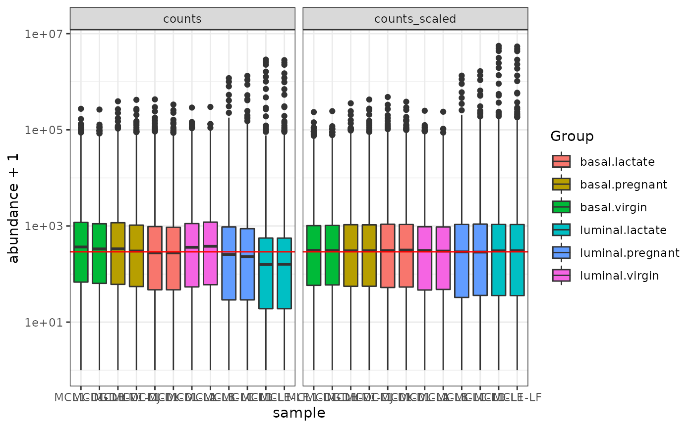
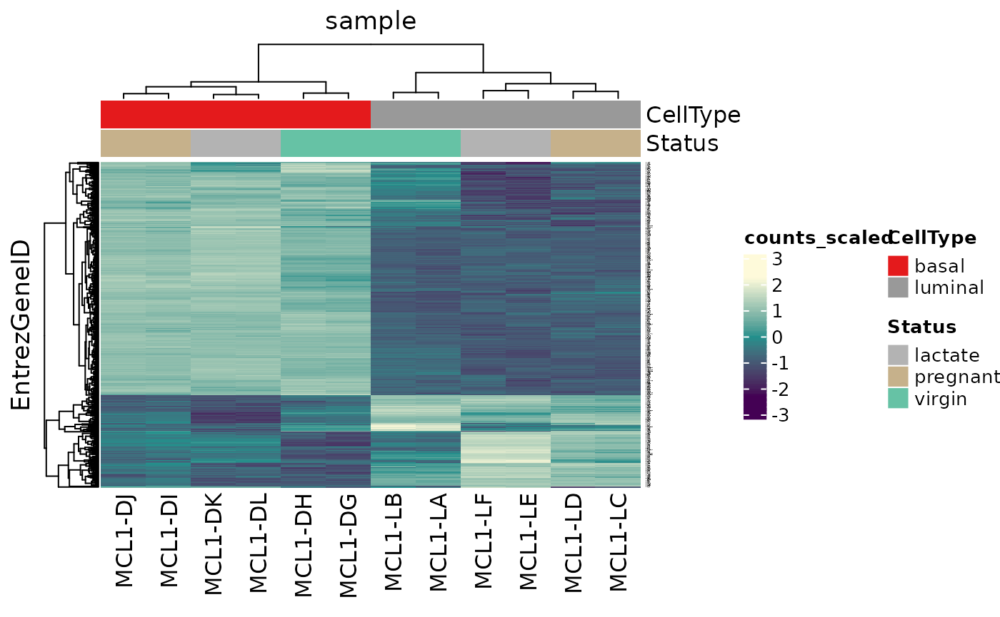
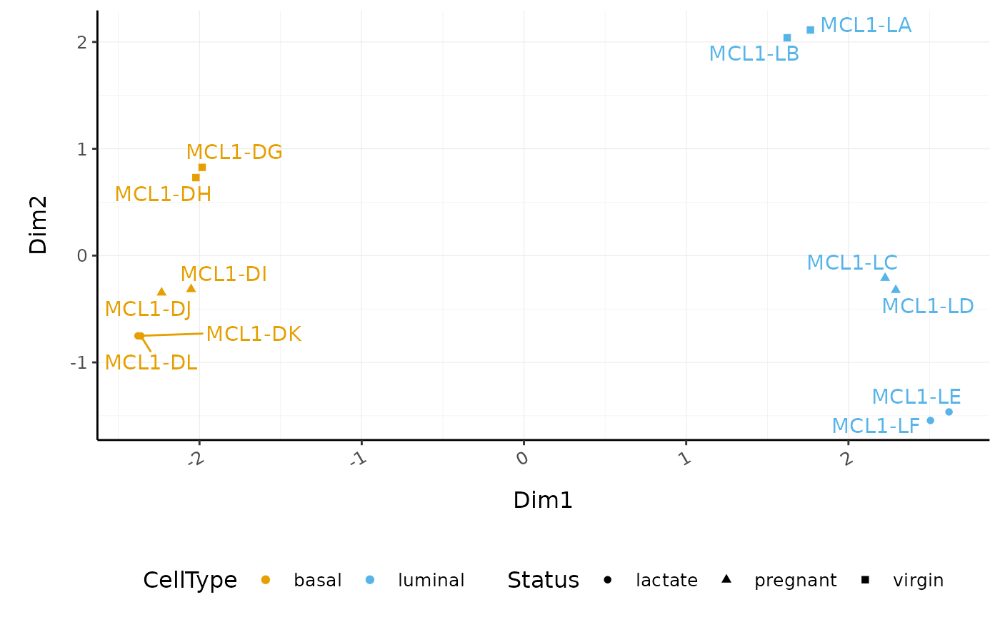
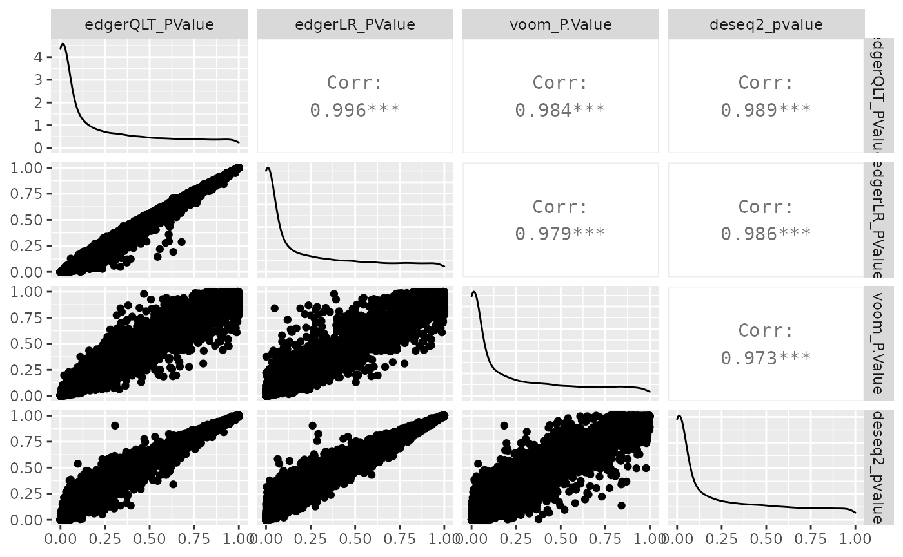
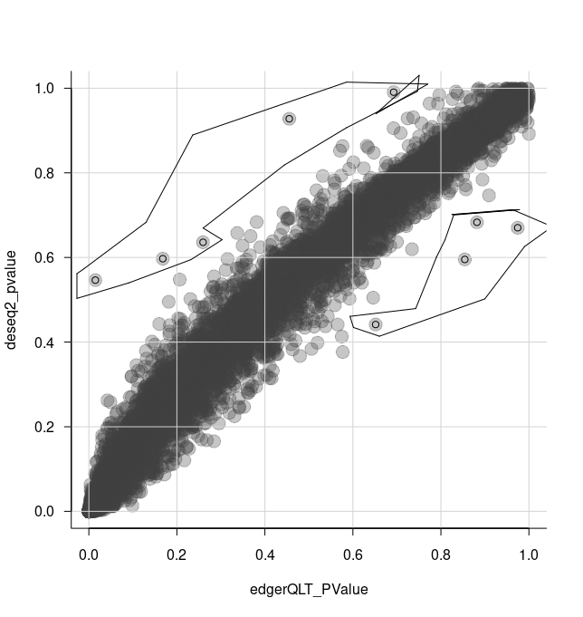
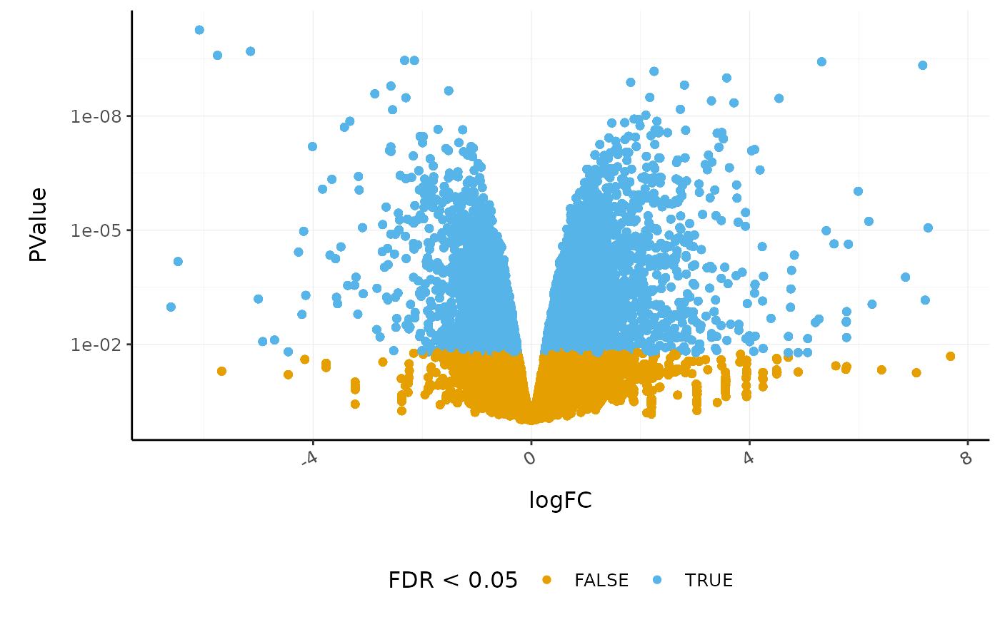
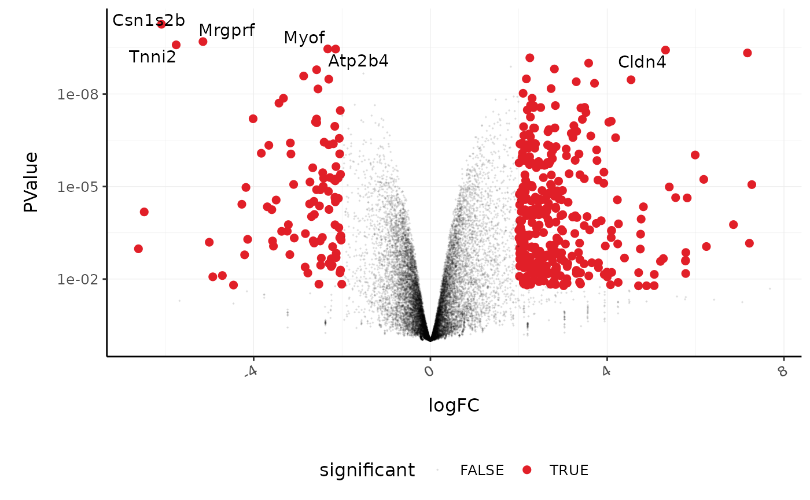
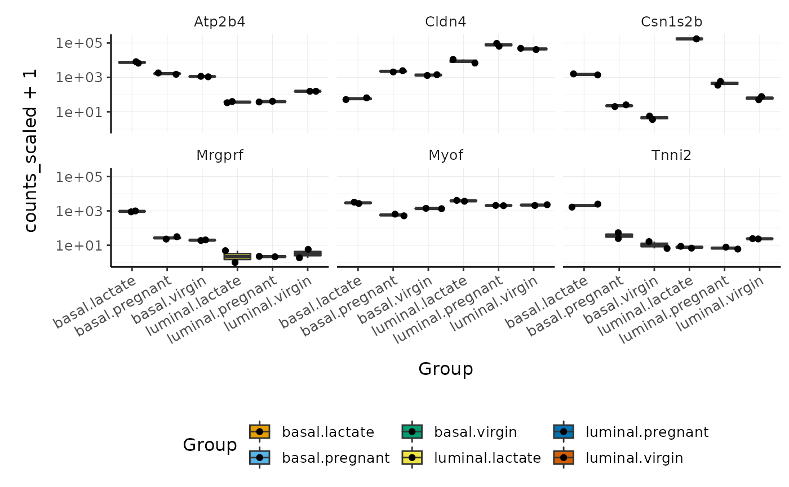

RNAseq-R-tidyverse
Maria Doyle, Peter MacCallum Cancer Centre1
Stefano Mangiola, Walter and Eliza Hall Institute2
Source:vignettes/tidytranscriptomics.Rmd
tidytranscriptomics.RmdThis workshop will present how to perform analysis of RNA sequencing data following the tidy data paradigm (Wickham and others 2014). The tidy data paradigm provides a standard way to organise data values within a dataset, where each variable is a column, each observation is a row, and data is manipulated using an easy-to-understand vocabulary. Most importantly, the data structure remains consistent across manipulation and analysis functions.
This can be achieved for RNA sequencing data with the tidybulk, tidyHeatmap (Mangiola and Papenfuss 2020) and tidyverse (Wickham et al. 2019) packages. The tidybulk package provides a tidy data structure and a modular framework for bulk transcriptional analyses. tidyHeatmap provides a tidy implementation of ComplexHeatmap. These packages are part of the tidytranscriptomics suite that introduces a tidy approach to RNA sequencing data representation and analysis
Introduction
Measuring gene expression on a genome-wide scale has become common practice over the last two decades or so, with microarrays predominantly used pre-2008. With the advent of next generation sequencing technology in 2008, an increasing number of scientists use this technology to measure and understand changes in gene expression in often complex systems. As sequencing costs have decreased, using RNA sequencing to simultaneously measure the expression of tens of thousands of genes for multiple samples has never been easier. The cost of these experiments has now moved from generating the data to storing and analysing it.
There are many steps involved in analysing an RNA sequencing dataset. Sequenced reads are aligned to a reference genome, then the number of reads mapped to each gene can be counted. This results in a table of counts, which is what we perform statistical analyses on in R. While mapping and counting are important and necessary tasks, today we will be starting from the count data and showing how differential expression analysis can be performed in a friendly way using the Bioconductor package, tidybulk.
First, let’s load all the packages we will need to analyse the data.
Note: you should load the tidybulk library after the tidyverse core packages for best integration.
# load libraries
# tidyverse core packages
library(tibble)
library(dplyr)
library(tidyr)
library(readr)
library(stringr)
library(ggplot2)
# tidyverse-friendly packages
library(plotly)
library(ggrepel)
library(GGally)
library(tidyHeatmap)
library(tidybulk)Plot settings. Set the colours and theme we will use for our plots.
# Use colourblind-friendly colours
friendly_cols <- dittoSeq::dittoColors()
# Set theme
custom_theme <-
list(
scale_fill_manual(values = friendly_cols),
scale_color_manual(values = friendly_cols),
theme_bw() +
theme(
panel.border = element_blank(),
axis.line = element_line(),
panel.grid.major = element_line(size = 0.2),
panel.grid.minor = element_line(size = 0.1),
text = element_text(size = 12),
legend.position = "bottom",
strip.background = element_blank(),
axis.title.x = element_text(margin = margin(t = 10, r = 10, b = 10, l = 10)),
axis.title.y = element_text(margin = margin(t = 10, r = 10, b = 10, l = 10)),
axis.text.x = element_text(angle = 30, hjust = 1, vjust = 1)
)
)Setting up the data
Here we will perform RNA-Seq analysis using data from a breast cancer research study, from the paper by Fu et al. 2015, GEO code GSE60450. This study examined gene expression in basal and luminal cells from mice at different stages of mammary gland development (virgin, pregnant and lactating). There are 2 samples per group and 6 groups, 12 samples in total.
We will be using the tidyverse pipe %>%. This ‘pipes’ the output from the command on the left into the command on the right/below. Using the pipe is not essential but it reduces the amount of code we need to write when we have multiple steps (as we’ll see later). It also can make the steps clearer and easier to see. For more details on the pipe see here.
# import RNA-seq counts
seqdata <- read_tsv("https://ndownloader.figshare.com/files/5057929?private_link=1d788fd384d33e913a2a")
#>
#> ── Column specification ────────────────────────────────────────────────────────
#> cols(
#> EntrezGeneID = col_double(),
#> Length = col_double(),
#> `MCL1-DG_BC2CTUACXX_ACTTGA_L002_R1` = col_double(),
#> `MCL1-DH_BC2CTUACXX_CAGATC_L002_R1` = col_double(),
#> `MCL1-DI_BC2CTUACXX_ACAGTG_L002_R1` = col_double(),
#> `MCL1-DJ_BC2CTUACXX_CGATGT_L002_R1` = col_double(),
#> `MCL1-DK_BC2CTUACXX_TTAGGC_L002_R1` = col_double(),
#> `MCL1-DL_BC2CTUACXX_ATCACG_L002_R1` = col_double(),
#> `MCL1-LA_BC2CTUACXX_GATCAG_L001_R1` = col_double(),
#> `MCL1-LB_BC2CTUACXX_TGACCA_L001_R1` = col_double(),
#> `MCL1-LC_BC2CTUACXX_GCCAAT_L001_R1` = col_double(),
#> `MCL1-LD_BC2CTUACXX_GGCTAC_L001_R1` = col_double(),
#> `MCL1-LE_BC2CTUACXX_TAGCTT_L001_R1` = col_double(),
#> `MCL1-LF_BC2CTUACXX_CTTGTA_L001_R1` = col_double()
#> )
# import sample information
sampleinfo <- read_tsv("https://ndownloader.figshare.com/files/5999832?private_link=1d788fd384d33e913a2a")
#>
#> ── Column specification ────────────────────────────────────────────────────────
#> cols(
#> FileName = col_character(),
#> SampleName = col_character(),
#> CellType = col_character(),
#> Status = col_character()
#> )Take a look at the data.
seqdata
#> # A tibble: 27,179 x 14
#> EntrezGeneID Length `MCL1-DG_BC2CTU… `MCL1-DH_BC2CTU… `MCL1-DI_BC2CTU…
#> <dbl> <dbl> <dbl> <dbl> <dbl>
#> 1 497097 3634 438 300 65
#> 2 100503874 3259 1 0 1
#> 3 100038431 1634 0 0 0
#> 4 19888 9747 1 1 0
#> 5 20671 3130 106 182 82
#> 6 27395 4203 309 234 337
#> 7 18777 2433 652 515 948
#> 8 100503730 799 0 1 0
#> 9 21399 2847 1604 1495 1721
#> 10 58175 2241 4 2 14
#> # … with 27,169 more rows, and 9 more variables:
#> # `MCL1-DJ_BC2CTUACXX_CGATGT_L002_R1` <dbl>,
#> # `MCL1-DK_BC2CTUACXX_TTAGGC_L002_R1` <dbl>,
#> # `MCL1-DL_BC2CTUACXX_ATCACG_L002_R1` <dbl>,
#> # `MCL1-LA_BC2CTUACXX_GATCAG_L001_R1` <dbl>,
#> # `MCL1-LB_BC2CTUACXX_TGACCA_L001_R1` <dbl>,
#> # `MCL1-LC_BC2CTUACXX_GCCAAT_L001_R1` <dbl>,
#> # `MCL1-LD_BC2CTUACXX_GGCTAC_L001_R1` <dbl>,
#> # `MCL1-LE_BC2CTUACXX_TAGCTT_L001_R1` <dbl>,
#> # `MCL1-LF_BC2CTUACXX_CTTGTA_L001_R1` <dbl>
sampleinfo
#> # A tibble: 12 x 4
#> FileName SampleName CellType Status
#> <chr> <chr> <chr> <chr>
#> 1 MCL1.DG_BC2CTUACXX_ACTTGA_L002_R1 MCL1.DG basal virgin
#> 2 MCL1.DH_BC2CTUACXX_CAGATC_L002_R1 MCL1.DH basal virgin
#> 3 MCL1.DI_BC2CTUACXX_ACAGTG_L002_R1 MCL1.DI basal pregnant
#> 4 MCL1.DJ_BC2CTUACXX_CGATGT_L002_R1 MCL1.DJ basal pregnant
#> 5 MCL1.DK_BC2CTUACXX_TTAGGC_L002_R1 MCL1.DK basal lactate
#> 6 MCL1.DL_BC2CTUACXX_ATCACG_L002_R1 MCL1.DL basal lactate
#> 7 MCL1.LA_BC2CTUACXX_GATCAG_L001_R1 MCL1.LA luminal virgin
#> 8 MCL1.LB_BC2CTUACXX_TGACCA_L001_R1 MCL1.LB luminal virgin
#> 9 MCL1.LC_BC2CTUACXX_GCCAAT_L001_R1 MCL1.LC luminal pregnant
#> 10 MCL1.LD_BC2CTUACXX_GGCTAC_L001_R1 MCL1.LD luminal pregnant
#> 11 MCL1.LE_BC2CTUACXX_TAGCTT_L001_R1 MCL1.LE luminal lactate
#> 12 MCL1.LF_BC2CTUACXX_CTTGTA_L001_R1 MCL1.LF luminal lactateShorten the sample names to the first 7 characters in the counts file columns.
countdata <- rename_with(seqdata, ~ str_sub(.x, 1, 7), starts_with("MCL"))Add gene symbols
countdata <- mutate(countdata, symbol = AnnotationDbi::mapIds(org.Mm.eg.db::org.Mm.eg.db,
keys = as.character(EntrezGeneID),
keytype = "ENTREZID",
column="SYMBOL",
multiVals = "first"))
#>
#> 'select()' returned 1:1 mapping between keys and columnsConvert the counts into long format (tidy format).
counts_long <-
pivot_longer(countdata, cols = starts_with("MCL"), names_to = "sample", values_to = "counts")
# take a look
counts_long
#> # A tibble: 326,148 x 5
#> EntrezGeneID Length symbol sample counts
#> <dbl> <dbl> <chr> <chr> <dbl>
#> 1 497097 3634 Xkr4 MCL1-DG 438
#> 2 497097 3634 Xkr4 MCL1-DH 300
#> 3 497097 3634 Xkr4 MCL1-DI 65
#> 4 497097 3634 Xkr4 MCL1-DJ 237
#> 5 497097 3634 Xkr4 MCL1-DK 354
#> 6 497097 3634 Xkr4 MCL1-DL 287
#> 7 497097 3634 Xkr4 MCL1-LA 0
#> 8 497097 3634 Xkr4 MCL1-LB 0
#> 9 497097 3634 Xkr4 MCL1-LC 0
#> 10 497097 3634 Xkr4 MCL1-LD 0
#> # … with 326,138 more rows
sampleinfo_formatted <- sampleinfo %>%
# make column called Group by combining the CellType and Status columns
unite("Group", CellType:Status, sep=".", remove=FALSE) %>%
# replace the . in the SampleName column with - so can join to counts
mutate(SampleName=str_replace(SampleName, "\\.", "-"))Join the counts and sampleinfo
# convert to tidybulk tibble
counts_tt <-
counts_annot %>%
mutate(EntrezGeneID = as.character(EntrezGeneID)) %>%
tidybulk(.sample=sample, .transcript=EntrezGeneID, .abundance=counts)The counts_airway object contains information about genes and samples, the first column has the Ensembl gene identifier, the second column has the sample identifier and the third column has the gene transcription abundance. The abundance is the number of reads aligning to the gene in each experimental sample. The remaining columns include sample-wise information. The dex column tells us whether the samples are treated or untreated and the cell column tells us what cell line they are from. We can shorten the sample names. We can remove the SRR1039 prefix that’s present in all of them, as shorter names can fit better in some of the plots we will create. We can use mutate() together with str_replace() to remove the SRR1039 string from the sample column. We can get the gene symbols for these Ensembl gene ids using the Bioconductor annotation package for human, org.Hs.eg.db and add them as a column using mutate again. With tidyverse, all above steps can be linked with the %>%, as shown below. This has the benefits that * no temporary variables need to be created * less typing is required * the steps can be seen more clearly.
# setup data workflow
counts_tt <-
airway %>%
tidybulk() %>%
mutate(sample = str_remove(sample, "SRR1039")) %>%
mutate(symbol = AnnotationDbi::mapIds(org.Hs.eg.db::org.Hs.eg.db,
keys = as.character(feature),
keytype = "ENSEMBL",
column = "SYMBOL",
multiVals = "first"
))
# take a look
counts_ttFrom this tidybulk tibble, we can perform differential expression analysis with the tidybulk package.
Filtering lowly transcribed genes
Genes with very low counts across all libraries provide little evidence for differential expression and they can interfere with some of the statistical approximations that are used later in the pipeline. They also add to the multiple testing burden when estimating false discovery rates, reducing power to detect differentially expressed genes. These genes should be filtered out prior to further analysis.
We can perform the filtering using tidybulk keep_abundant or identify_abundant. These functions can use the edgeR filterByExpr function described in (Law et al. 2016) to automatically identify the genes with adequate abundance for differential expression testing. By default, this will keep genes with ~10 counts in a minimum number of samples, the number of the samples in the smallest group. In this dataset the smallest group size is four (as we have four dex-treated samples versus four untreated). Alternatively, we could use identify_abundant to identify which genes are abundant or not (TRUE/FALSE), rather than just keeping the abundant ones.
# Filtering counts
counts_filtered <- counts_tt %>% keep_abundant(factor_of_interest = Group)
# take a look
counts_filtered
#> # A tibble: 191,628 x 10
#> EntrezGeneID Length symbol sample counts FileName Group CellType Status
#> <chr> <dbl> <chr> <chr> <dbl> <chr> <chr> <chr> <chr>
#> 1 497097 3634 Xkr4 MCL1-… 438 MCL1.DG… basa… basal virgin
#> 2 497097 3634 Xkr4 MCL1-… 300 MCL1.DH… basa… basal virgin
#> 3 497097 3634 Xkr4 MCL1-… 65 MCL1.DI… basa… basal pregn…
#> 4 497097 3634 Xkr4 MCL1-… 237 MCL1.DJ… basa… basal pregn…
#> 5 497097 3634 Xkr4 MCL1-… 354 MCL1.DK… basa… basal lacta…
#> 6 497097 3634 Xkr4 MCL1-… 287 MCL1.DL… basa… basal lacta…
#> 7 497097 3634 Xkr4 MCL1-… 0 MCL1.LA… lumi… luminal virgin
#> 8 497097 3634 Xkr4 MCL1-… 0 MCL1.LB… lumi… luminal virgin
#> 9 497097 3634 Xkr4 MCL1-… 0 MCL1.LC… lumi… luminal pregn…
#> 10 497097 3634 Xkr4 MCL1-… 0 MCL1.LD… lumi… luminal pregn…
#> # … with 191,618 more rows, and 1 more variable: .abundant <lgl>After running keep_abundant we have a column called .abundant containing TRUE (identify_abundant would have TRUE/FALSE).
Scaling counts to normalise
Scaling of counts, normalisation, is performed to eliminate uninteresting differences between samples due to sequencing depth or composition. A more detailed explanation can be found here. In the tidybulk package the function scale_abundance generates scaled counts, with scaling factors calculated on abundant (filtered) transcripts and applied to all transcripts. We can choose from different normalisation methods. Here we will use the default, edgeR’s trimmed mean of M values (TMM), (Robinson and Oshlack 2010). TMM normalisation (and most scaling normalisation methods) scale relative to one sample.
# Scaling counts
counts_scaled <- counts_filtered %>% scale_abundance()
# take a look
counts_scaled
#> # A tibble: 191,628 x 13
#> EntrezGeneID Length symbol sample counts FileName Group CellType Status
#> <chr> <dbl> <chr> <chr> <dbl> <chr> <chr> <chr> <chr>
#> 1 497097 3634 Xkr4 MCL1-… 438 MCL1.DG… basa… basal virgin
#> 2 497097 3634 Xkr4 MCL1-… 300 MCL1.DH… basa… basal virgin
#> 3 497097 3634 Xkr4 MCL1-… 65 MCL1.DI… basa… basal pregn…
#> 4 497097 3634 Xkr4 MCL1-… 237 MCL1.DJ… basa… basal pregn…
#> 5 497097 3634 Xkr4 MCL1-… 354 MCL1.DK… basa… basal lacta…
#> 6 497097 3634 Xkr4 MCL1-… 287 MCL1.DL… basa… basal lacta…
#> 7 497097 3634 Xkr4 MCL1-… 0 MCL1.LA… lumi… luminal virgin
#> 8 497097 3634 Xkr4 MCL1-… 0 MCL1.LB… lumi… luminal virgin
#> 9 497097 3634 Xkr4 MCL1-… 0 MCL1.LC… lumi… luminal pregn…
#> 10 497097 3634 Xkr4 MCL1-… 0 MCL1.LD… lumi… luminal pregn…
#> # … with 191,618 more rows, and 4 more variables: .abundant <lgl>, TMM <dbl>,
#> # multiplier <dbl>, counts_scaled <dbl>After we run scale_abundance we should see some columns have been added at the end. The counts_scaled column contains the scaled counts.
We can visualise the difference of abundance distributions before and after scaling. As tidybulk output is compatible with tidyverse, we can simply pipe it into standard tidyverse functions such as filter, pivot_longer and ggplot. We can also take advantage of ggplot’s facet_wrap to easily create multiple plots.
counts_scaled %>%
# Reshaping
pivot_longer(cols = c("counts", "counts_scaled"), names_to = "source", values_to = "abundance") %>%
# Plotting
ggplot(aes(x = sample, y = abundance + 1, fill = Group)) +
geom_boxplot() +
geom_hline(aes(yintercept = median(abundance + 1)), colour = "red") +
facet_wrap(~source) +
scale_y_log10() +
theme_bw()
In this dataset the distributions of the counts are not very different to each other before scaling but scaling does make the distributions more similar. If we saw a sample with a very different distribution we may need to investigate it.
Exploratory analyses
Dimensionality reduction
By far, one of the most important plots we make when we analyse RNA sequencing data are principal-component analysis (PCA) or multi-dimensional scaling (MDS) plots. We reduce the dimensions of the data to identify the greatest sources of variation in the data. A principal components analysis is an example of an unsupervised analysis, where we don’t need to specify the groups. If your experiment is well controlled and has worked well, what we hope to see is that the greatest sources of variation in the data are the treatments/groups we are interested in. It is also an incredibly useful tool for quality control and checking for outliers. We can use the reduce_dimensions function to calculate the dimensions.
# Get principal components
counts_scal_MDS <-
counts_scaled %>%
reduce_dimensions(method = "MDS", scale=FALSE)
#> tidybulk says: to access the raw results do `attr(..., "internals")$MDS`This joins the result to the counts object.
# Take a look
counts_scal_MDS
#> # A tibble: 191,628 x 15
#> EntrezGeneID Length symbol sample counts FileName Group CellType Status
#> <chr> <dbl> <chr> <chr> <dbl> <chr> <chr> <chr> <chr>
#> 1 497097 3634 Xkr4 MCL1-… 438 MCL1.DG… basa… basal virgin
#> 2 497097 3634 Xkr4 MCL1-… 300 MCL1.DH… basa… basal virgin
#> 3 497097 3634 Xkr4 MCL1-… 65 MCL1.DI… basa… basal pregn…
#> 4 497097 3634 Xkr4 MCL1-… 237 MCL1.DJ… basa… basal pregn…
#> 5 497097 3634 Xkr4 MCL1-… 354 MCL1.DK… basa… basal lacta…
#> 6 497097 3634 Xkr4 MCL1-… 287 MCL1.DL… basa… basal lacta…
#> 7 497097 3634 Xkr4 MCL1-… 0 MCL1.LA… lumi… luminal virgin
#> 8 497097 3634 Xkr4 MCL1-… 0 MCL1.LB… lumi… luminal virgin
#> 9 497097 3634 Xkr4 MCL1-… 0 MCL1.LC… lumi… luminal pregn…
#> 10 497097 3634 Xkr4 MCL1-… 0 MCL1.LD… lumi… luminal pregn…
#> # … with 191,618 more rows, and 6 more variables: .abundant <lgl>, TMM <dbl>,
#> # multiplier <dbl>, counts_scaled <dbl>, Dim1 <dbl>, Dim2 <dbl>For plotting, we can select just the sample-wise information with pivot_sample.
# take a look
counts_scal_MDS %>% pivot_sample()
#> # A tibble: 12 x 10
#> sample FileName Group CellType Status .abundant TMM multiplier Dim1 Dim2
#> <chr> <chr> <chr> <chr> <chr> <lgl> <dbl> <dbl> <dbl> <dbl>
#> 1 MCL1-… MCL1.DG… basa… basal virgin TRUE 1.25 0.854 -2.00 0.838
#> 2 MCL1-… MCL1.DH… basa… basal virgin TRUE 1.23 0.926 -2.03 0.740
#> 3 MCL1-… MCL1.DI… basa… basal pregn… TRUE 1.13 0.910 -2.08 -0.315
#> 4 MCL1-… MCL1.DJ… basa… basal pregn… TRUE 1.08 1.01 -2.26 -0.347
#> 5 MCL1-… MCL1.DK… basa… basal lacta… TRUE 1.03 1.12 -2.41 -0.755
#> 6 MCL1-… MCL1.DL… basa… basal lacta… TRUE 1.08 1.15 -2.39 -0.758
#> 7 MCL1-… MCL1.LA… lumi… luminal virgin TRUE 1.41 0.859 1.80 2.12
#> 8 MCL1-… MCL1.LB… lumi… luminal virgin TRUE 1.44 0.794 1.65 2.05
#> 9 MCL1-… MCL1.LC… lumi… luminal pregn… TRUE 0.984 1.13 2.23 -0.205
#> 10 MCL1-… MCL1.LD… lumi… luminal pregn… TRUE 0.902 1.25 2.30 -0.325
#> 11 MCL1-… MCL1.LE… lumi… luminal lacta… TRUE 0.519 1.93 2.65 -1.48
#> 12 MCL1-… MCL1.LF… lumi… luminal lacta… TRUE 0.522 1.92 2.53 -1.56We can now plot the reduced dimensions.
# MDS plot
counts_scal_MDS %>%
pivot_sample() %>%
ggplot(aes(x = Dim1, y = Dim2, colour = CellType, shape = Status)) +
geom_point() +
geom_text_repel(aes(label = sample), show.legend = FALSE) +
custom_theme
The samples separate by treatment on PC1 which is what we hope to see. PC2 separates the N080611 cell line from the other samples, indicating a greater difference between that cell line and the others.
Hierarchical clustering with heatmaps
An alternative to principal component analysis for examining relationships between samples is using hierarchical clustering. Heatmaps are a nice visualisation to examine hierarchical clustering of your samples. tidybulk has a simple function we can use, keep_variable, to extract the most variable genes which we can then plot with tidyHeatmap.
counts_scal_MDS %>%
# extract 500 most variable genes
keep_variable(.abundance = counts_scaled, top = 500) %>%
# create heatmap
heatmap(
.column = sample,
.row = EntrezGeneID,
.value = counts_scaled,
transform = log1p
) %>%
add_tile(CellType) %>%
add_tile(Status)
#> Getting the 500 most variable genes
In the heatmap we can see the samples cluster into two groups, treated and untreated, for three of the cell lines, and the cell line (N080611) again is further away from the others.
Tidybulk enables a simplified way of generating a clustered heatmap of variable genes. Compare the code below for tidybulk versus a base R method.
base R using edgeR
# Example code, no need to run
library(edgeR)
dgList <- SE2DGEList(airway)
group <- factor(dgList$samples$dex)
keep.exprs <- filterByExpr(dgList, group = group)
dgList <- dgList[keep.exprs, , keep.lib.sizes = FALSE]
dgList <- calcNormFactors(dgList)
logcounts <- cpm(dgList, log = TRUE)
var_genes <- apply(logcounts, 1, var)
select_var <- names(sort(var_genes, decreasing = TRUE))[1:500]
highly_variable_lcpm <- logcounts[select_var, ]
colours <- c("#440154FF", "#21908CFF", "#fefada")
col.group <- c("red", "grey")[group]
gplots::heatmap.2(highly_variable_lcpm, col = colours, trace = "none", ColSideColors = col.group, scale = "row")Differential expression
tidybulk integrates several popular methods for differential transcript abundance testing: the edgeR quasi-likelihood (Chen, Lun, and Smyth 2016) (tidybulk default method), edgeR likelihood ratio (McCarthy, Chen, and Smyth 2012), limma-voom (Law et al. 2014) and DESeq2 (Love, Huber, and Anders 2014). A common question researchers have is which method to choose. With tidybulk we can easily run multiple methods and compare.
We give test_differential_abundance our tidybulk counts object and a formula, specifying the column that contains our groups to be compared. If all our samples were from the same cell line, and there were no additional factors contributing variance such as batch differences, we could use the formula ~ dex. However, each treated and untreated sample is from a different cell line so we add the cell line as an additional factor ~ dex + cell.
de_all <-
counts_scal_MDS %>%
# edgeR QLT
test_differential_abundance(
~ 0 + Group,
method = "edgeR_quasi_likelihood",
prefix = "edgerQLT_",
.contrasts = c("Groupbasal.pregnant - Groupbasal.lactate"),
omit_contrast_in_colnames = TRUE
) %>%
# edgeR LRT
test_differential_abundance(
~ 0 + Group,
method = "edgeR_likelihood_ratio",
prefix = "edgerLR_",
.contrasts = c("Groupbasal.pregnant - Groupbasal.lactate"),
omit_contrast_in_colnames = TRUE
) %>%
# limma-voom
test_differential_abundance(
~ 0 + Group,
method = "limma_voom",
prefix = "voom_",
.contrasts = c("Groupbasal.pregnant - Groupbasal.lactate"),
omit_contrast_in_colnames = TRUE
) %>%
# DESeq2
test_differential_abundance(
~ 0 + Group,
method = "deseq2",
prefix = "deseq2_",
.contrasts = list(c("Group", "basal.lactate", "basal.pregnant")),
omit_contrast_in_colnames = TRUE
)
# take a look
de_all
#> # A tibble: 191,628 x 37
#> EntrezGeneID Length symbol sample counts FileName Group CellType Status
#> <chr> <dbl> <chr> <chr> <dbl> <chr> <chr> <chr> <chr>
#> 1 497097 3634 Xkr4 MCL1-… 438 MCL1.DG… basa… basal virgin
#> 2 497097 3634 Xkr4 MCL1-… 300 MCL1.DH… basa… basal virgin
#> 3 497097 3634 Xkr4 MCL1-… 65 MCL1.DI… basa… basal pregn…
#> 4 497097 3634 Xkr4 MCL1-… 237 MCL1.DJ… basa… basal pregn…
#> 5 497097 3634 Xkr4 MCL1-… 354 MCL1.DK… basa… basal lacta…
#> 6 497097 3634 Xkr4 MCL1-… 287 MCL1.DL… basa… basal lacta…
#> 7 497097 3634 Xkr4 MCL1-… 0 MCL1.LA… lumi… luminal virgin
#> 8 497097 3634 Xkr4 MCL1-… 0 MCL1.LB… lumi… luminal virgin
#> 9 497097 3634 Xkr4 MCL1-… 0 MCL1.LC… lumi… luminal pregn…
#> 10 497097 3634 Xkr4 MCL1-… 0 MCL1.LD… lumi… luminal pregn…
#> # … with 191,618 more rows, and 28 more variables: .abundant <lgl>, TMM <dbl>,
#> # multiplier <dbl>, counts_scaled <dbl>, Dim1 <dbl>, Dim2 <dbl>,
#> # edgerQLT_logFC <dbl>, edgerQLT_logCPM <dbl>, edgerQLT_F <dbl>,
#> # edgerQLT_PValue <dbl>, edgerQLT_FDR <dbl>, edgerLR_logFC <dbl>,
#> # edgerLR_logCPM <dbl>, edgerLR_LR <dbl>, edgerLR_PValue <dbl>,
#> # edgerLR_FDR <dbl>, voom_logFC <dbl>, voom_AveExpr <dbl>, voom_t <dbl>,
#> # voom_P.Value <dbl>, voom_adj.P.Val <dbl>, voom_B <dbl>,
#> # deseq2_baseMean <dbl>, deseq2_log2FoldChange <dbl>, deseq2_lfcSE <dbl>,
#> # deseq2_stat <dbl>, deseq2_pvalue <dbl>, deseq2_padj <dbl>This outputs the columns from each method such as log-fold change (logFC), false-discovery rate (FDR) and probability value (p-value). logFC is log2(treated/untreated).
Comparison of methods
We can visually compare the significance for all methods. We will notice that there is some difference between the methods.
de_all %>%
pivot_transcript() %>%
select(edgerQLT_PValue, edgerLR_PValue, voom_P.Value, deseq2_pvalue, EntrezGeneID) %>%
ggpairs(1:4)
In order to decide which genes are differentially expressed, we usually take a cut-off of 0.05 on the FDR (or adjusted P value), NOT the raw p-value. This is because we are testing many genes (multiple testing), and the chances of finding differentially expressed genes is very high when you do that many tests. Hence we need to control the false discovery rate, which is the adjusted p-value column in the results table. What this means is that if 100 genes are significant at a 5% false discovery rate, we are willing to accept that 5 will be false positives.
We can count how many differentially expressed genes there are, for example with the edgeR QLT method. We’ll filter on FDR 0.05.
de_all %>%
filter(edgerQLT_FDR < 0.05) %>%
summarise(num_de = n_distinct(EntrezGeneID))
#> # A tibble: 1 x 1
#> num_de
#> <int>
#> 1 5287Which method detects the most differentially abundant transcripts, p value adjusted for multiple testing < 0.05 (FDR, adj.P.Val, padj)?Note: Some of the methods produce columns with different names for similar outputs. If you wish to make these consistent you can do that with tidyverse rename. For example, to rename the p value adjusted columns you could run below.
de_all %>% rename(deseq2_FDR = deseq2_padj, voom_FDR = voom_adj.P.Val)We can select some of the transcripts that look different between methods in the plot using the tidygate package. We can then investigate these transcripts, for example, by visualising their counts.
With tidygate, we can interactively draw gates to select points we want using gate. We specify which columns we want to plot in the scatterplot, and how many gates we want to draw. We can also specify the opacity if we want to make it easier to see overlapping points.
de_gate <-
de_all %>%
tidygate::gate(
EntrezGeneID,
edgerQLT_PValue,
deseq2_pvalue,
opacity = 0.3,
how_many_gates = 2
)We then click to draw gates around the points we want, for example as shown in the screenshot below.

That will add a column called gate, specifying which gate the points (transcripts) are in.
#> Warning: `gate()` is deprecated as of tidygate 0.3.0.
#> Please use `gate_chr()` instead.
#> This warning is displayed once every 8 hours.
#> Call `lifecycle::last_warnings()` to see where this warning was generated.
#> # A tibble: 191,628 x 38
#> EntrezGeneID Length symbol sample counts FileName Group CellType Status
#> <chr> <dbl> <chr> <chr> <dbl> <chr> <chr> <chr> <chr>
#> 1 497097 3634 Xkr4 MCL1-… 438 MCL1.DG… basa… basal virgin
#> 2 497097 3634 Xkr4 MCL1-… 300 MCL1.DH… basa… basal virgin
#> 3 497097 3634 Xkr4 MCL1-… 65 MCL1.DI… basa… basal pregn…
#> 4 497097 3634 Xkr4 MCL1-… 237 MCL1.DJ… basa… basal pregn…
#> 5 497097 3634 Xkr4 MCL1-… 354 MCL1.DK… basa… basal lacta…
#> 6 497097 3634 Xkr4 MCL1-… 287 MCL1.DL… basa… basal lacta…
#> 7 497097 3634 Xkr4 MCL1-… 0 MCL1.LA… lumi… luminal virgin
#> 8 497097 3634 Xkr4 MCL1-… 0 MCL1.LB… lumi… luminal virgin
#> 9 497097 3634 Xkr4 MCL1-… 0 MCL1.LC… lumi… luminal pregn…
#> 10 497097 3634 Xkr4 MCL1-… 0 MCL1.LD… lumi… luminal pregn…
#> # … with 191,618 more rows, and 29 more variables: .abundant <lgl>, TMM <dbl>,
#> # multiplier <dbl>, counts_scaled <dbl>, Dim1 <dbl>, Dim2 <dbl>,
#> # edgerQLT_logFC <dbl>, edgerQLT_logCPM <dbl>, edgerQLT_F <dbl>,
#> # edgerQLT_PValue <dbl>, edgerQLT_FDR <dbl>, edgerLR_logFC <dbl>,
#> # edgerLR_logCPM <dbl>, edgerLR_LR <dbl>, edgerLR_PValue <dbl>,
#> # edgerLR_FDR <dbl>, voom_logFC <dbl>, voom_AveExpr <dbl>, voom_t <dbl>,
#> # voom_P.Value <dbl>, voom_adj.P.Val <dbl>, voom_B <dbl>,
#> # deseq2_baseMean <dbl>, deseq2_log2FoldChange <dbl>, deseq2_lfcSE <dbl>,
#> # deseq2_stat <dbl>, deseq2_pvalue <dbl>, deseq2_padj <dbl>, gate <chr>We can check how many transcripts we’ve got in each gate.
de_gate %>%
pivot_transcript() %>%
count(gate)
#> # A tibble: 1 x 2
#> gate n
#> <chr> <int>
#> 1 0 15969We can now select the transcripts from our two gates i.e. more significant in edgeR (gate 1) and more significant in DESeq2 (gate 2) and visualise the counts for each sample in the treated and untreated groups.
de_gate %>%
# Filter for transcripts within the gates
filter(gate > 0) %>%
# Rename for clarity
mutate(gate = case_when(
gate == 1 ~ "more in edgeR",
gate == 2 ~ "more in DESeq2",
TRUE ~ gate
)) %>%
# Order the plots for the transcripts
mutate(EntrezGeneID = forcats::fct_reorder(EntrezGeneID, edgerQLT_PValue, min)) %>%
# Plot
ggplot(aes(dex, counts_scaled, color = gate)) +
geom_point() +
facet_wrap(~EntrezGeneID, scale = "free_y", ncol = 4) +
custom_themeWe could also check the log fold changes for these genes and see, for example, that DESeq2 produces a more conservative logFC statistic for the gene ENSG00000104725.
de_gate %>%
pivot_transcript() %>%
filter(EntrezGeneID == "ENSG00000104725") %>%
select(edgerQLT_logFC, deseq2_log2FoldChange)Single method
If we just wanted to run one differential testing method we could do that. The default method is edgeR quasi-likelihood.
counts_de <- counts_scal_MDS %>%
test_differential_abundance(~ 0 + Group,
.contrasts = c("Groupbasal.pregnant - Groupbasal.lactate"),
omit_contrast_in_colnames = TRUE)
#> =====================================
#> tidybulk says: All testing methods use raw counts, irrespective of if scale_abundance
#> or adjust_abundance have been calculated. Therefore, it is essential to add covariates
#> such as batch effects (if applicable) in the formula.
#> =====================================
#> tidybulk says: The design column names are "Groupbasal.lactate, Groupbasal.pregnant, Groupbasal.virgin, Groupluminal.lactate, Groupluminal.pregnant, Groupluminal.virgin"
#> tidybulk says: to access the raw results (fitted GLM) do `attr(..., "internals")$edgeR`Tidybulk enables a simplified way of performing an RNA sequencing differential expression analysis (with the benefit of smoothly integrating with ggplot2 and other tidyverse packages). Compare the code for a tidybulk edgeR analysis versus standard edgeR below.
standard edgeR
# Example code, no need to run
library(edgeR)
dgList <- SE2DGEList(airway)
group <- factor(dgList$samples$dex)
keep.exprs <- filterByExpr(dgList, group = group)
dgList <- dgList[keep.exprs, , keep.lib.sizes = FALSE]
dgList <- calcNormFactors(dgList)
cell <- factor(dgList$samples$cell)
design <- model.matrix(~ group + cell)
dgList <- estimateDisp(dgList, design)
fit <- glmQLFit(dgList, design)
qlf <- glmQLFTest(fit, coef=2)Plots after testing for differentially expressed
We’ll extract the symbols for a few top genes (by P value) to use in some of the plots we will make.
topgenes_symbols <-
counts_de %>%
pivot_transcript() %>%
arrange(PValue) %>%
head(6) %>%
pull(symbol)Volcano plots
Volcano plots are a useful genome-wide plot for checking that the analysis looks good. Volcano plots enable us to visualise the significance of change (p-value) versus the fold change (logFC). Highly significant genes are towards the top of the plot. We can also colour significant genes (e.g. genes with false-discovery rate < 0.05)
# volcano plot, minimal
counts_de %>%
ggplot(aes(x = logFC, y = PValue, colour = FDR < 0.05)) +
geom_point() +
scale_y_continuous(trans = "log10_reverse") +
custom_theme
A more informative plot, integrating some of the packages in tidyverse.
counts_de %>%
pivot_transcript() %>%
# Subset data
mutate(significant = FDR < 0.05 & abs(logFC) >= 2) %>%
mutate(symbol = ifelse(symbol %in% topgenes_symbols, as.character(symbol), "")) %>%
# Plot
ggplot(aes(x = logFC, y = PValue, label = symbol)) +
geom_point(aes(color = significant, size = significant, alpha = significant)) +
geom_text_repel() +
# Custom scales
custom_theme +
scale_y_continuous(trans = "log10_reverse") +
scale_color_manual(values = c("black", "#e11f28")) +
scale_size_discrete(range = c(0, 2))
#> Scale for 'colour' is already present. Adding another scale for 'colour',
#> which will replace the existing scale.
Stripcharts
Before following up on the differentially expressed genes with further lab work, it is also recommended to have a look at the expression levels of the individual samples for the genes of interest. We can use stripcharts to do this. These will help show if expression is consistent amongst replicates in the groups.
With stripcharts we can see if replicates tend to group together and how the expression compares to the other groups. We’ll also add a box plot to show the distribution. Tidyverse faceting makes it easy to create a plot for each gene.
strip_chart <-
counts_scaled %>%
# extract counts for top differentially expressed genes
filter(symbol %in% topgenes_symbols) %>%
# make faceted stripchart
ggplot(aes(x = Group, y = counts_scaled + 1, fill = Group, label = sample)) +
geom_boxplot() +
geom_jitter() +
facet_wrap(~symbol) +
scale_y_log10() +
custom_theme
strip_chart
Interactive Plots
A really nice feature of using tidyverse and ggplot2 is that we can make interactive plots quite easily using the plotly package. This can be very useful for exploring what genes or samples are in the plots. We can make interactive plots directly from our ggplot2 object (strip_chart). Having label in the aes is useful to visualise the identifier of the data point (here the sample id) or other variables when we hover over the plot.
We can also specify which parameters from the aes we want to show up when we hover over the plot with tooltip.
Automatic bibliography
Tidybulk provides a handy function called get_bibliography that keeps track of the references for the methods used in your tidybulk workflow. The references are in BibTeX format and can be imported into your reference manager.
get_bibliography(counts_de)
#> @article{robinson2010edger,
#> title={edgeR: a Bioconductor package for differential expression analysis of digital gene expression data},
#> author={Robinson, Mark D and McCarthy, Davis J and Smyth, Gordon K},
#> journal={Bioinformatics},
#> volume={26},
#> number={1},
#> pages={139--140},
#> year={2010},
#> publisher={Oxford University Press}
#> }
#> @article{robinson2010scaling,
#> title={A scaling normalization method for differential expression analysis of RNA-seq data},
#> author={Robinson, Mark D and Oshlack, Alicia},
#> journal={Genome biology},
#> volume={11},
#> number={3},
#> pages={1--9},
#> year={2010},
#> publisher={BioMed Central}
#> }
#> @incollection{smyth2005limma,
#> title={Limma: linear models for microarray data},
#> author={Smyth, Gordon K},
#> booktitle={Bioinformatics and computational biology solutions using R and Bioconductor},
#> pages={397--420},
#> year={2005},
#> publisher={Springer}
#> }Contributing
If you want to suggest improvements for this workshop or ask questions, you can do so as described here.
Reproducibility
Record package and version information with sessionInfo
sessionInfo()
#> R version 4.0.3 (2020-10-10)
#> Platform: x86_64-pc-linux-gnu (64-bit)
#> Running under: Ubuntu 20.04 LTS
#>
#> Matrix products: default
#> BLAS/LAPACK: /usr/lib/x86_64-linux-gnu/openblas-pthread/libopenblasp-r0.3.8.so
#>
#> locale:
#> [1] LC_CTYPE=en_US.UTF-8 LC_NUMERIC=C
#> [3] LC_TIME=en_US.UTF-8 LC_COLLATE=en_US.UTF-8
#> [5] LC_MONETARY=en_US.UTF-8 LC_MESSAGES=C
#> [7] LC_PAPER=en_US.UTF-8 LC_NAME=C
#> [9] LC_ADDRESS=C LC_TELEPHONE=C
#> [11] LC_MEASUREMENT=en_US.UTF-8 LC_IDENTIFICATION=C
#>
#> attached base packages:
#> [1] stats graphics grDevices utils datasets methods base
#>
#> other attached packages:
#> [1] tidybulk_1.2.0 tidyHeatmap_1.1.5 GGally_2.0.0 ggrepel_0.8.2
#> [5] plotly_4.9.2.1 ggplot2_3.3.2 stringr_1.4.0 readr_1.4.0
#> [9] tidyr_1.1.2 dplyr_1.0.2 tibble_3.0.4
#>
#> loaded via a namespace (and not attached):
#> [1] colorspace_2.0-0 rjson_0.2.20
#> [3] ellipsis_0.3.1 ggridges_0.5.2
#> [5] rprojroot_2.0.2 circlize_0.4.11
#> [7] XVector_0.30.0 GenomicRanges_1.42.0
#> [9] GlobalOptions_0.1.2 fs_1.5.0
#> [11] clue_0.3-58 rstudioapi_0.13
#> [13] farver_2.0.3 bit64_4.0.5
#> [15] AnnotationDbi_1.52.0 fansi_0.4.1
#> [17] splines_4.0.3 geneplotter_1.68.0
#> [19] knitr_1.30 RNAseqRtidyverse_0.0.1
#> [21] tidygate_0.3.2 jsonlite_1.7.1
#> [23] Cairo_1.5-12.2 annotate_1.68.0
#> [25] cluster_2.1.0 png_0.1-7
#> [27] pheatmap_1.0.12 compiler_4.0.3
#> [29] httr_1.4.2 assertthat_0.2.1
#> [31] Matrix_1.2-18 lazyeval_0.2.2
#> [33] limma_3.46.0 cli_2.2.0
#> [35] org.Mm.eg.db_3.12.0 htmltools_0.5.0
#> [37] tools_4.0.3 gtable_0.3.0
#> [39] glue_1.4.2 GenomeInfoDbData_1.2.4
#> [41] Rcpp_1.0.5 Biobase_2.50.0
#> [43] pkgdown_1.6.1 vctrs_0.3.5
#> [45] preprocessCore_1.52.0 crosstalk_1.1.0.1
#> [47] xfun_0.19 ps_1.5.0
#> [49] lifecycle_0.2.0 XML_3.99-0.5
#> [51] edgeR_3.32.0 zlibbioc_1.36.0
#> [53] scales_1.1.1 ragg_0.4.0
#> [55] hms_0.5.3 MatrixGenerics_1.2.0
#> [57] parallel_4.0.3 SummarizedExperiment_1.20.0
#> [59] RColorBrewer_1.1-2 SingleCellExperiment_1.12.0
#> [61] ComplexHeatmap_2.6.2 yaml_2.2.1
#> [63] curl_4.3 memoise_1.1.0
#> [65] gridExtra_2.3 reshape_0.8.8
#> [67] stringi_1.5.3 RSQLite_2.2.1
#> [69] genefilter_1.72.0 S4Vectors_0.28.0
#> [71] desc_1.2.0 BiocGenerics_0.36.0
#> [73] BiocParallel_1.24.1 shape_1.4.5
#> [75] GenomeInfoDb_1.26.1 rlang_0.4.9
#> [77] pkgconfig_2.0.3 systemfonts_0.3.2
#> [79] matrixStats_0.57.0 bitops_1.0-6
#> [81] evaluate_0.14 lattice_0.20-41
#> [83] purrr_0.3.4 htmlwidgets_1.5.2
#> [85] labeling_0.4.2 cowplot_1.1.0
#> [87] bit_4.0.4 tidyselect_1.1.0
#> [89] plyr_1.8.6 magrittr_2.0.1
#> [91] DESeq2_1.30.0 R6_2.5.0
#> [93] IRanges_2.24.0 generics_0.1.0
#> [95] DelayedArray_0.16.0 DBI_1.1.0
#> [97] pillar_1.4.7 withr_2.3.0
#> [99] survival_3.2-7 RCurl_1.98-1.2
#> [101] crayon_1.3.4 utf8_1.1.4
#> [103] dittoSeq_1.2.2 rmarkdown_2.5
#> [105] viridis_0.5.1 GetoptLong_1.0.4
#> [107] locfit_1.5-9.4 grid_4.0.3
#> [109] data.table_1.13.4 blob_1.2.1
#> [111] digest_0.6.27 xtable_1.8-4
#> [113] textshaping_0.2.1 stats4_4.0.3
#> [115] munsell_0.5.0 viridisLite_0.3.0References
Chen, Yunshun, Aaron TL Lun, and Gordon K Smyth. 2016. “From Reads to Genes to Pathways: Differential Expression Analysis of Rna-Seq Experiments Using Rsubread and the edgeR Quasi-Likelihood Pipeline.” F1000Research 5.
Law, Charity W, Monther Alhamdoosh, Shian Su, Xueyi Dong, Luyi Tian, Gordon K Smyth, and Matthew E Ritchie. 2016. “RNA-Seq Analysis Is Easy as 1-2-3 with Limma, Glimma and edgeR.” F1000Research 5.
Law, Charity W, Yunshun Chen, Wei Shi, and Gordon K Smyth. 2014. “Voom: Precision Weights Unlock Linear Model Analysis Tools for Rna-Seq Read Counts.” Genome Biology 15 (2): R29.
Love, Michael I, Wolfgang Huber, and Simon Anders. 2014. “Moderated Estimation of Fold Change and Dispersion for Rna-Seq Data with Deseq2.” Genome Biology 15 (12): 550.
Mangiola, Stefano, and Anthony T Papenfuss. 2020. “TidyHeatmap: An R Package for Modular Heatmap Production Based on Tidy Principles.” Journal of Open Source Software 5 (52): 2472.
McCarthy, Davis J, Yunshun Chen, and Gordon K Smyth. 2012. “Differential Expression Analysis of Multifactor Rna-Seq Experiments with Respect to Biological Variation.” Nucleic Acids Research 40 (10): 4288–97.
Robinson, Mark D, and Alicia Oshlack. 2010. “A Scaling Normalization Method for Differential Expression Analysis of Rna-Seq Data.” Genome Biology 11 (3): 1–9.
Wickham, Hadley, Mara Averick, Jennifer Bryan, Winston Chang, Lucy D’Agostino McGowan, Romain François, Garrett Grolemund, et al. 2019. “Welcome to the Tidyverse.” Journal of Open Source Software 4 (43): 1686.
Wickham, Hadley, and others. 2014. “Tidy Data.” Journal of Statistical Software 59 (10): 1–23.